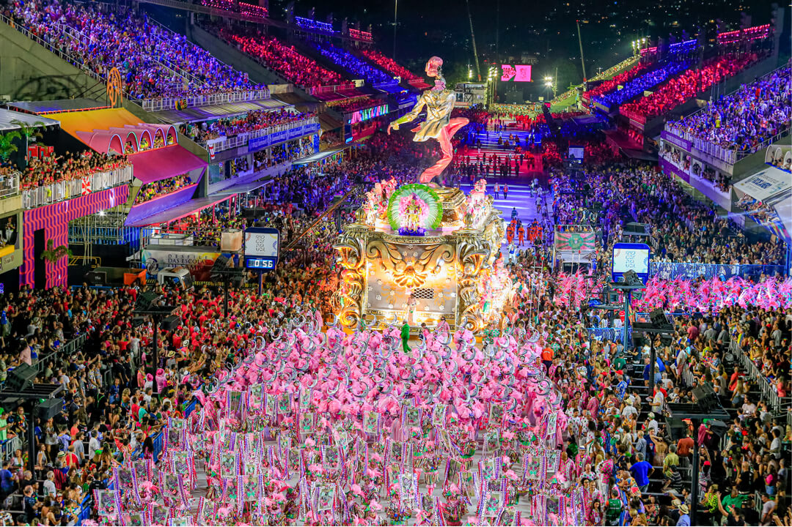
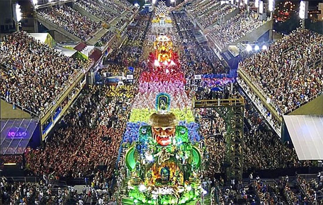

Among the popular classes, samba schools emerged in the 1920s. It is considered that the first samba school would have been “Deixa Falar”, founded in 1928, which would give rise to the Estácio de Sá school. Another samba school Pioneering samba was “Vai como Pode”, which is currently known as Portela. Samba schools were the development of cordões and ranchos, and the first dispute between them took place in Rio de Janeiro, in 1932.Samba schools and the Rio carnival began to become an important commercial activity from the 1960s onwards. Entrepreneurs in the Jogo do Bicho and other legal business activities began to invest in cultural tradition. Rio de Janeiro City Hall began to placing stands on Avenida Rio Branco and charging admission to see the parade.In São Paulo, there was also the development of the samba school parade from this period onwards. In 1984, the Passarela do Samba, or Sambadrome, was created in Rio de Janeiro under the mandate of former governor Leonel Brizola. With an architectural design created by Oscar Niemeyer, the building became one of the main symbols of Brazilian Carnival. The Sambódromo hosts the parades of Rio de Janeiro's samba schools. Carnival, in addition to being a Brazilian cultural tradition, has become a profitable business in the tourism and entertainment sector. Millions of tourists head to the country at the time of this festival, and billions of reais are spent on the production and consumption of this cultural commodity.  